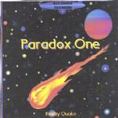

Home Artist links Label link

Paradox One - Reality Quake
| Artist: | Paradox One |
| Title: | Reality Quake |
| Label: | Neurosis Records |
| Length(s): | 40 minutes |
| Year(s) of release: | 2000 |
| Month of review: | [02/2001] |
Line up
Phil Jackson - synths, guitar, drum machine, vox
Tracks
| 2) | Crompton Divided | 13.47
|
Summary
Phil Jackson from Scotland has something in common with myself: he is a reviewer (for
Acid Dragon) and accidentally I have traded cds with him. Not through himself
but his "record company" Neurosis Records (led by Rick Ray) I got this disc.
The liner notes indicate it seems that it is meant as a kind of demo cd, in the sense
that he might reuse material of it later.
The music
The first track on this album is also the longest. Based on Robert Silverberg's
book The World Inside, Urbmon 116 opens with sequencer work transporting us back
to the golden seventies of early Tangerine Dream. Quite soon and abruptly the music
becomes brooding but melodic. Sampled voices and such add to the menacing
quality of this strong piece of electronic music. The third phase in the music
occurs when we move into part II of the track. However, each part has a number of
abrupt changes, that would I think warrant a splitting up of these parts (I mean if
you split up at all, maybe a good idea to split along melodic ideas).
This second part has quite a number of strong melodic aspects and really rips
at some point. Long, distorted tones on a backdrop of programmed rhythm and
a low pace sequencer make for a very nice piece of electronic rock. The quiet part
that follows weirdly enough maybe reminds me a bit of Peter Hammill/VDGG. The singing
is rather disjointed and someone seems to sing through himself, but the atmosphere
is well done. We are now into part three which opens a bit cosmic, and later we hear
some Vangelis influences, the music become more sensuous and melodic, optimistic even
in a way. After a short silence (this track has quite a few of them), the music starts
off at a bouncy pace. The music is much more percussive here and there's something
in there that sounds like acoustic guitar. The dark sequencers return again the transitions
here seem disjointed. The optimistic tune returns and the music is full of burbly synths.
The final part of the track ends with some ELPish keyboards (and I also hear some electric
guitar far in the back it seems).
Conclusion about this track is that it contains some very good parts, but as a totality
the silences in the music almost seem to say that it is more a string of ideas than
anything else: there are no phased transitions or fluent breaks.
The second track is slightly less long and is also based on an SF book, this time by
Robert Sheckley. Although I happen to own four books by Sheckley and over a dozen by
Silverberg it is just too bad that I do not happen to own the ones who are portrayed
right here. He does refer to a personal favourite sf book of mine: Arthur C. Clarke's
Childhood's End. Like the predecessor, this track opens with sequencers and has a bit
of a Bolero feel, after which we get some moody stuff in the second part, Psychosmell.
Reality Quake features some easy going acoustic guitar and some spoken vocals.
After the short lyrics in the title part Crompton Divided, Dan The Man is a rather up-beat
psychedelic adventure. This is pure seventies psyche with some heavy distortion. The
final part is easy going again with synths dominating the track. It is a very slow piece
with some bluesy guitar in there as well).
The End Of All Things is a piece of made of bits and pieces and the samples are not
really worked in well. There are too many gaps. This track really takes
some more working on. The groovy organ playing is the dominating part of the song,
but the groove has a hard time getting going, partly probably, because it is hard to
do this by yourself.
The final part is partly based on Von Fremden Landern Und Menschen by Robert Schumann.
After a classical sounding opening, the second part of this track is rather melodramatic
(but in a good way), a cosmic, soothing piece.
Conclusion
Electronic music with a beat and often with some nicely scultped atmospheres. There
are some psychedelic influences as well and some heavy noisy guitarwork to boot and
on the whole I liked many of his ideas (agreeing with Rick Ray on the fact that
the opener is the most interesting of the tracks). Technically the music is far from
perfect. The music is electronic, but certainly not meant to dazzle with its solo's and
it seems Phil is more at home in the moody atmospherics than anything else and he does
have some good melodies up his sleeve. The artistic potential is there, the technical
quality should be a matter of time.
© Jurriaan Hage